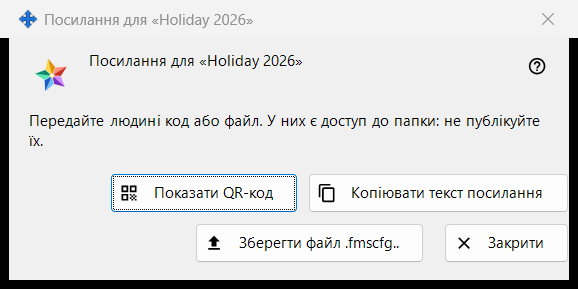
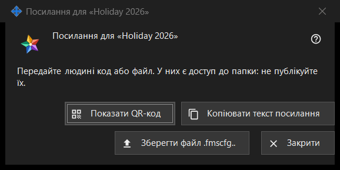

Посилання для папки
Призначення
Передає одну опубліковану папку людині, яка не має облікового запису на сервері обміну: у вигляді QR-коду, тексту посилання та файлу .fmscfg. Вікно відкривається після «Створити посилання..» або «Нове посилання..» у групі «Мої спільні папки в обліковому записі обміну», а також кнопкою «Показати QR / Код..» у вікні «Дати доступ назовні..» біля папки. У поточній програмі обидві команди вимкнені, бо доступ для людей поза обліковим записом не пропонується; на цій сторінці описано, що показує вікно, коли посилання є.


Порядок дій
- Виберіть опубліковану папку й натисніть «Створити посилання..» (або «Нове посилання..», щоб замінити попереднє).
- Прочитайте примітку вгорі вікна.
- Передайте посилання одним зі способів: «Показати QR-код», «Копіювати текст посилання» або «Зберегти файл .fmscfg..».
- Натисніть «Закрити».
Елементи вікна
Коли вікно доступне
Вікно є лише в посилання, яке щойно зробили або яке вже існує. Якщо програма не пропонує доступ людям поза обліковим записом, «Створити посилання..» і «Нове посилання..» вимкнені, примітка під ними називає причину, а вікно не відкривається; «Показати QR / Код..» теж вимкнена. «Видалити посилання» залишається доступною.
Примітка вгорі
«Передайте людині код або файл. У них є доступ до папки: не публікуйте їх.» Хто тримає QR-код, текст посилання або файл, той може відкрити цю папку. Текст посилання на екрані не показується.
Показати QR-код
Відкриває картинку з QR-кодом у вікні збільшення. Кнопка є, лише якщо QR-код вдалося побудувати; якщо текст посилання завеликий для QR-коду, менеджер відповідає: «Код завеликий для QR-коду - використайте файл.».
Копіювати текст посилання
Кладе текст посилання (він починається з FMSSFTP2:) у буфер обміну захищеним способом: до історії буфера Windows і до хмарного буфера він не потрапляє. Вікно відповідає: «Текст посилання скопійовано.». Кнопка є, лише якщо в посилання є текст.
Зберегти файл .fmscfg..
Зберігає файл налаштувань для цієї однієї папки; прочитати його може лише власник. Вікно повідомляє «Файл збережено:» зі шляхом або «Не вдалося зберегти файл.». Кнопка є, лише якщо файл вдалося побудувати.
Нове посилання та «Видалити посилання»
Обидві команди містяться в групі, а не в цьому вікні, і обидві спершу запитують, причому за замовчуванням вибрано «Ні»: «Нове посилання..» попереджає, що всі попередні QR-коди й файли перестануть працювати, «Видалити посилання» - що перестануть працювати всі видані QR-коди й файли.
Закрити
Закриває вікно; текст посилання, вміст файлу та картинка QR із нього прибираються.
Налаштування менеджера · Налаштування спільного доступу SFTP · Налаштування сервера обміну